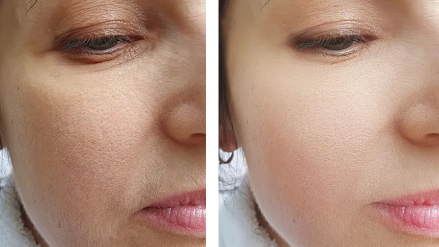
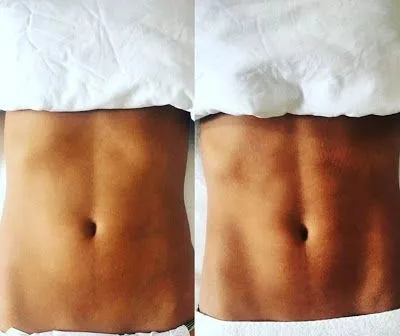
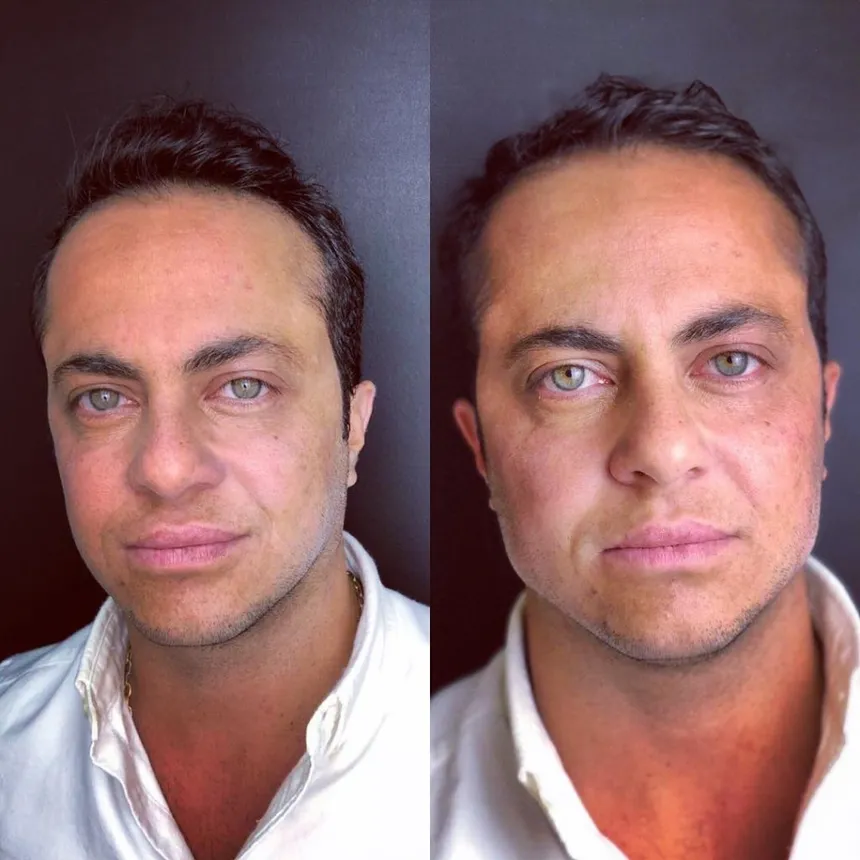
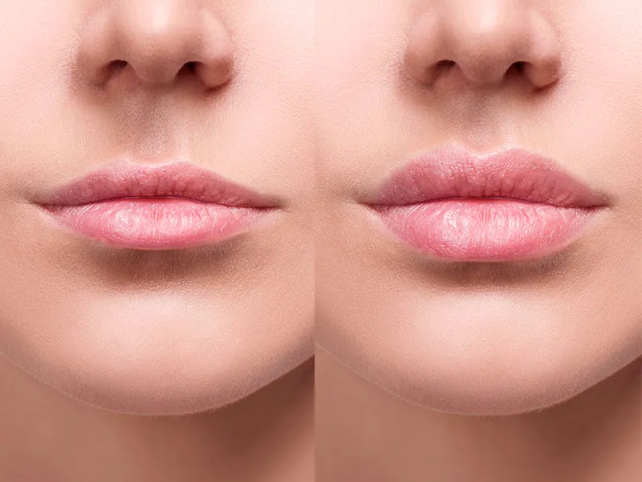
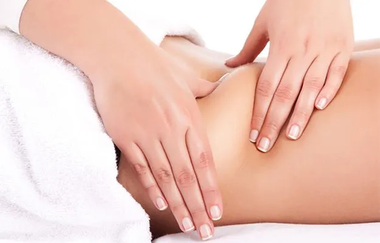
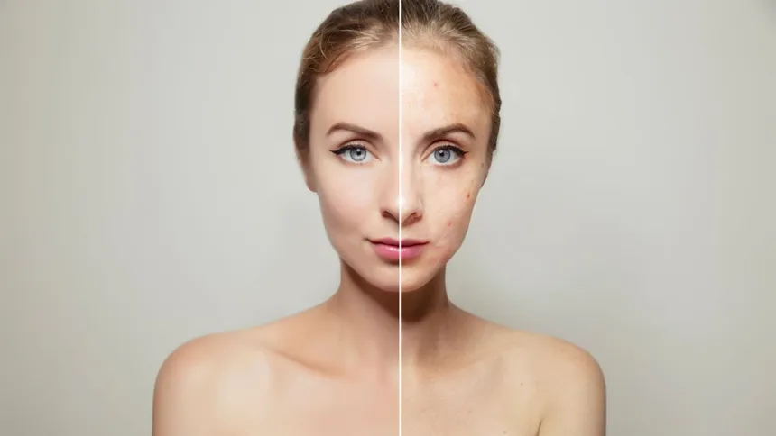
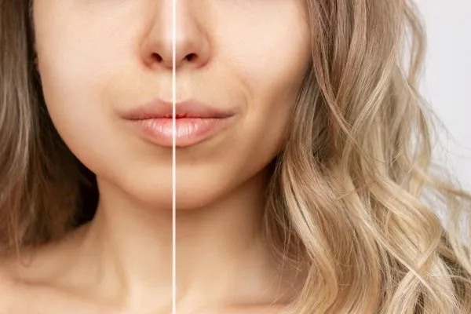
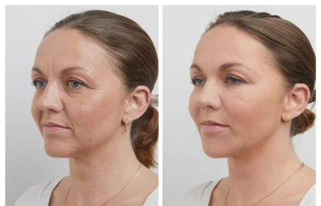

Conheça os nossos procedimentos!
Toxina Botulinica

A Toxina Botulínica é uma neurotoxina derivada da bactéria Clostridium botulinum. Este composto notável é amplamente reconhecido por sua capacidade de induzir um relaxamento temporário dos músculos, sendo amplamente utilizado em procedimentos estéticos para atenuar rugas faciais e linhas de expressão.
Harmonização de Glúteo
A harmonização de glúteo é um procedimento estético que visa melhorar a aparência e simetria dos glúteos, promovendo um contorno mais atraente e natural. Diferentemente de procedimentos cirúrgicos mais invasivos, como o aumento de glúteos com implantes ou enxertos de gordura.
Microagulhamento
O microagulhamento é um procedimento estético minimamente invasivo que utiliza um dispositivo com pequenas agulhas para criar microperfurações na pele. Esse processo estimula a produção de colágeno e promove a regeneração da pele, resultando em uma textura mais suave e uma aparência rejuvenescida.
Drenagem Linfática
A drenagem linfática tem como objetivo principal melhorar a circulação linfática, promovendo a eliminação de excesso de líquidos e resíduos metabólicos. Isso pode resultar em benefícios como a redução de inchaços, melhora na circulação sanguínea e relaxamento muscular.
Harmonização Facial
A harmonização facial é um conjunto de procedimentos estéticos não cirúrgicos que visa promover uma aparência mais equilibrada e simétrica do rosto. Essa abordagem busca realçar os traços naturais e proporcionar um resultado estético globalmente harmonioso.
Preenchimento Labial
O preenchimento labial é um procedimento estético popular que visa melhorar o volume e a forma dos lábios, proporcionando uma aparência mais cheia e simétrica. Este procedimento é comumente realizado através da injeção de substâncias preenchedoras.
Massagem Modeladora
A massagem modeladora é uma técnica de massagem que visa remodelar o corpo, melhorar a circulação sanguínea e reduzir medidas através de movimentos vigorosos e manobras específicas.
Peeling Químico
O peeling químico é um procedimento estético que utiliza substâncias químicas para esfoliar a camada superficial da pele, promovendo a renovação celular e melhorando a textura da pele.
Preenchimento Facial
A Toxina Botulínica é uma neurotoxina derivada da bactéria Clostridium botulinum. Este composto notável é amplamente reconhecido por sua capacidade de induzir um relaxamento temporário dos músculos, sendo amplamente utilizado em procedimentos estéticos para atenuar rugas faciais e linhas de expressão.
SkinBooster
O skinbooster é um tratamento estético que envolve a injeção de substâncias hidratantes, como ácido hialurônico, na camada superficial da pele para melhorar a hidratação, a textura e a luminosidade. Este procedimento é projetado para revitalizar a pele, proporcionando um aspecto mais saudável e jovem.